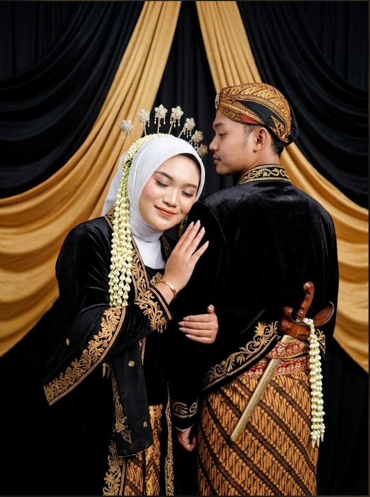
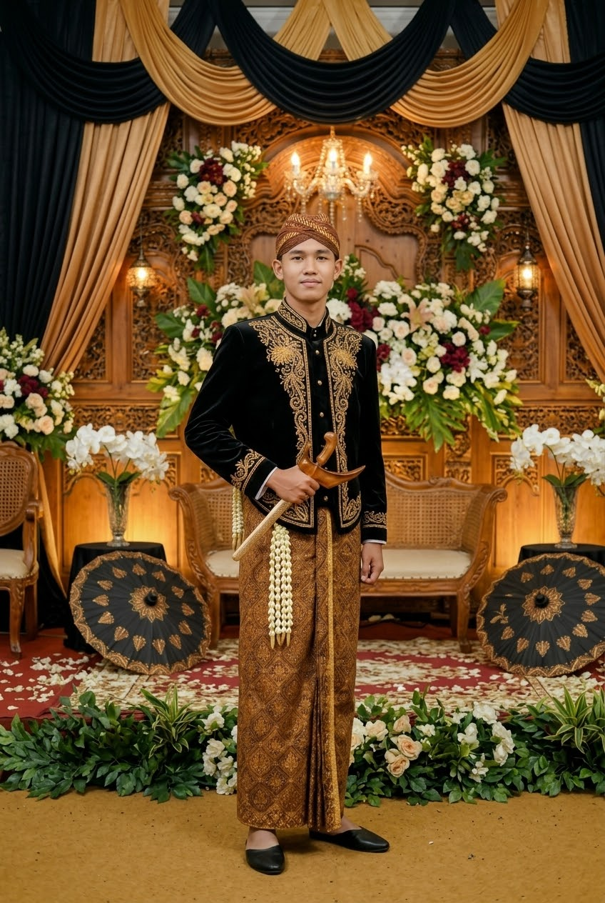
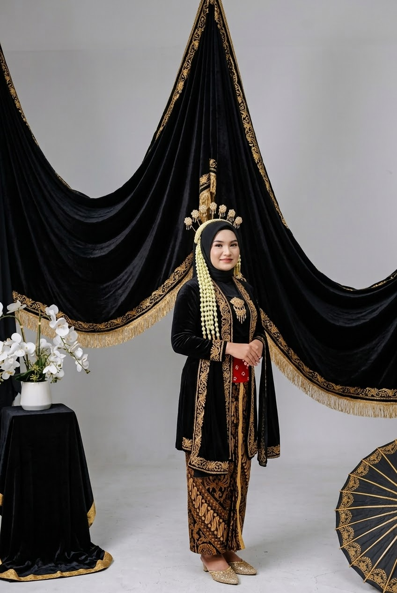

ꦩꦺꦴꦩꦺꦤ꧀ꦧꦲꦒꦶꦪ
Momen Bahagia
Reroncen crita asmara ingkang kebak berkah
❁ ꧁꧂ ❁

ꦩꦺꦴꦩꦺꦤ꧀ ꧇꧑꧇

ꦩꦺꦴꦩꦺꦤ꧀ ꧇꧒꧇

ꦩꦺꦴꦩꦺꦤ꧀ ꧇꧓꧇

ꦩꦺꦴꦩꦺꦤ꧀ ꧇꧔꧇
❁ ꦥ꦳ꦶꦢꦺꦪꦺꦴ ❁
ꦥ꦳ꦶꦢꦺꦪꦺꦴ ꧇꧑꧇
ꦥ꦳ꦶꦢꦺꦪꦺꦴ ꧇꧒꧇
ꦒꦩꦺꦭꦤ꧀
ꦱꦼꦫꦠ꧀ꦲꦸꦊꦩ꧀
SERAT ULEM KASMARAN
ꦄꦤ꧀ꦢꦶ
lan
ꦱꦫꦃ
ꦄꦏꦢ꧀ ꦤꦶꦏꦃ
15 . 10 . 2026
Senin Pahing • Wuku Sungsang
Katur dhumateng Bapak/Ibu/Saudara/i:
بِسْمِ اللّٰهِ الرَّحْمٰنِ الرَّحِيْمِ
ꦧꦱ꧀ꦩꦭ꧀ꦭꦃꦫꦃꦩꦤ꧀ꦫꦲꦶꦩ꧀
"Mugi-mugi Gusti Allah tansah tinuntun ing keslametan,
kabagaswaran, dhumateng kita sedaya."
ꦩꦺꦩ꧀ꦥꦺꦭꦻ
Kanthi panyuwun saha linambaran sih wilasaning
Gusti Ingkang Maha Agung, kami bermaksud
menyelenggarakan syukuran pernikahan putra-putri kami:

ꦄꦤ꧀ꦢꦶ
ꦄꦤ꧀ꦢꦶ ꦱꦸꦱꦤ꧀ꦠꦺꦴ
Putra kapisan saking
Bapak Shofiudin
&
Ibu Siti
ꦭꦤ꧀
lan

ꦱꦫꦃ
ꦱꦫꦃ ꦮꦶꦢꦶꦪꦂꦠꦶ
Putri kapindho saking
Bapak Muchibin
&
Ibu Chabibah
ꦏꦶꦱꦃꦏꦩꦶ
Reroncen crita asmara ingkang kebak berkah.
꧇꧒꧐꧑꧘꧇
2018
Pertemuan Pisanan
Pepanggihan ingkang sepisan wonten ing pawiyatan, nalika sami-sami ngangsu kawruh. Tanpa dipun jarag, Gusti paring dalan kangge patemon kita.
꧇꧒꧐꧒꧐꧇
2020
Kekancan Batos
Saking kekancan ingkang prasaja, saya dangu saya tuwuh raos katresnan. Saben dinten dados crita ingkang kebak makna.
꧇꧒꧐꧒꧓꧇
2023
Lamaran
Kanthi restu saking tiyang sepuh kekalih, kula ngaturaken lamaran dhumateng panjenengan. Mugi Gusti tansah ngijabahi.
꧇꧒꧐꧒꧖꧇
2026
Akad Nikah
Dinten ingkang dipun tunggu-tunggu, nalika kita ikrar janji suci wonten ing ngarsaning Gusti. Mugi dados kulawarga ingkang sakinah, mawaddah, warahmah.
ꦏꦸꦠꦶꦥꦤ꧀
"Katresnan iku ora mung rong tembung,
nanging laku lan pangorbanan
ingkang tulus lan lestari."
(Cinta bukan sekadar dua kata, melainkan perbuatan dan pengorbanan yang tulus dan abadi.)
ꦄꦕꦫ
ꦏꦤ꧀ꦠꦶ ꦢꦶꦤ꧀ꦠꦼꦤ꧀ ꦄꦏꦢ꧀
Menuju Hari Bahagia
ꦄꦏꦢ꧀ ꦤꦶꦏꦃ
Dinten
Senin Pahing
Tanggal
15 Oktober 2026
Wanci
08.00 - 10.00 WIB
ꦥꦁꦒꦺꦤ꧀ꦤꦤ꧀
Masjid Agung Al-Akbar
Jl. Sukolilo, Surabaya
ꦫꦺꦱꦺꦥ꧀ꦱꦶ
Dinten
Senin Pahing
Tanggal
15 Oktober 2026
Wanci
11.00 - 14.00 WIB
ꦥꦁꦒꦺꦤ꧀ꦤꦤ꧀
Gedung Graha Wisata
Jl. Raya Darmo No. 12, Surabaya
ꦩꦺꦴꦩꦺꦤ꧀ꦧꦲꦒꦶꦪ
Reroncen crita asmara ingkang kebak berkah
ꦩꦺꦴꦩꦺꦤ꧀ ꧇꧑꧇
ꦩꦺꦴꦩꦺꦤ꧀ ꧇꧒꧇
ꦩꦺꦴꦩꦺꦤ꧀ ꧇꧓꧇

ꦩꦺꦴꦩꦺꦤ꧀ ꧇꧔꧇
ꦥ꦳ꦶꦢꦺꦪꦺꦴ ꧇꧑꧇
ꦥ꦳ꦶꦢꦺꦪꦺꦴ ꧇꧒꧇
ꦈꦕꦥꦤ꧀ꦭꦤ꧀ꦢꦺꦴꦔ
ꦧꦸꦢꦶ
"Sugeng manten, mugi dados kulawarga ingkang sakinah, mawaddah, warahmah. Barakallahu lakuma."
ꦱꦶꦠꦶ
"Mugi Gusti tansah paring berkah lan katresnan ingkang lestari dhumateng kekalih."
ꦏꦝꦺꦴ
Tanpa ngurangi rasa hormat, menawi panjenengan badhe paring tanda asih,
saget lumantar rekening ing ngandhap punika.
ꦧꦤ꧀ꦏ꧀ ꦗꦠꦼꦁ
a.n. Andi Susanto
ꦧꦤ꧀ꦏ꧀ ꦗꦠꦼꦁ
a.n. Sarah Widiarti
ꦄꦭꦩꦠ꧀ ꦏꦶꦫꦶꦩ꧀ ꦏꦝꦺꦴ
Kediaman Andi & Sarah
Jl. Raya Darmo No. 45, RT 02 RW 05
Surabaya, Jawa Timur 60241
Telp/WA: 0812-3456-7890
ꦥꦩ꧀ꦧꦸꦏꦥꦤꦸꦠꦸꦥ꧀
ꦩꦠꦸꦂꦤꦸꦮꦸꦤ꧀
"Saking agengipun panuwun saha pangestu,
kula minangka tiyang ingkang badhe ngayahi jejibahan,
nyuwun pangapunten menawi wonten kalepatan
saha kekiranganing atur."
(Dari besarnya terima kasih dan restu, saya sebagai orang yang akan melaksanakan hajat, memohon maaf jika ada kesalahan dan kekurangan dalam bertutur.)